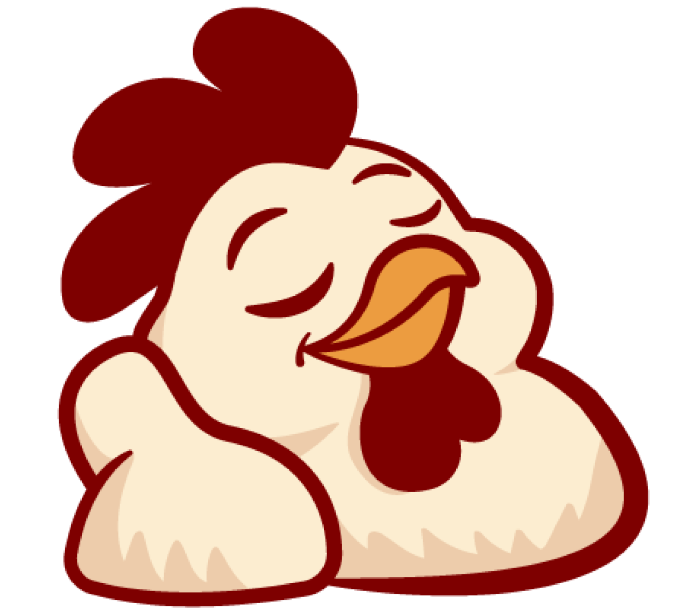
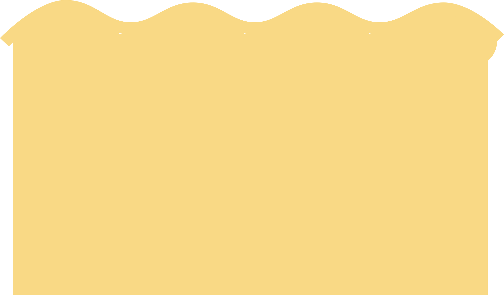
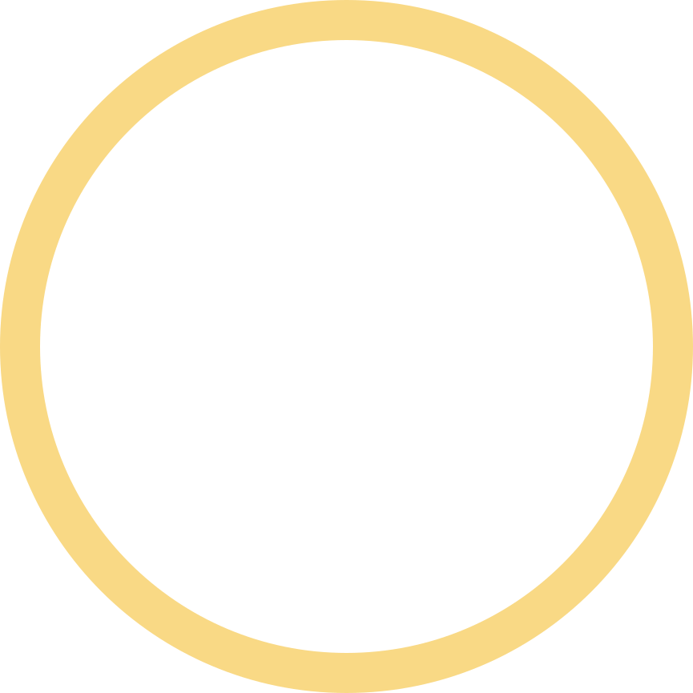
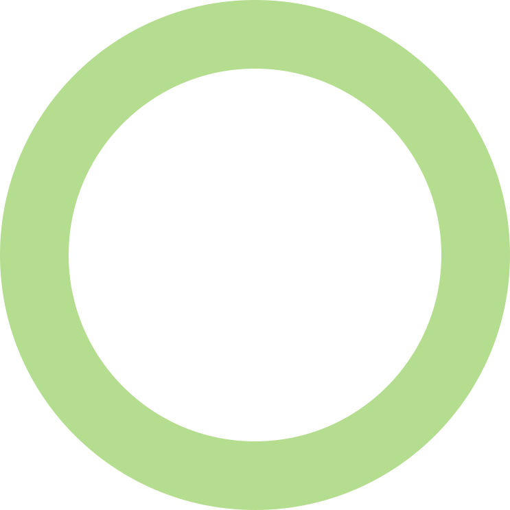
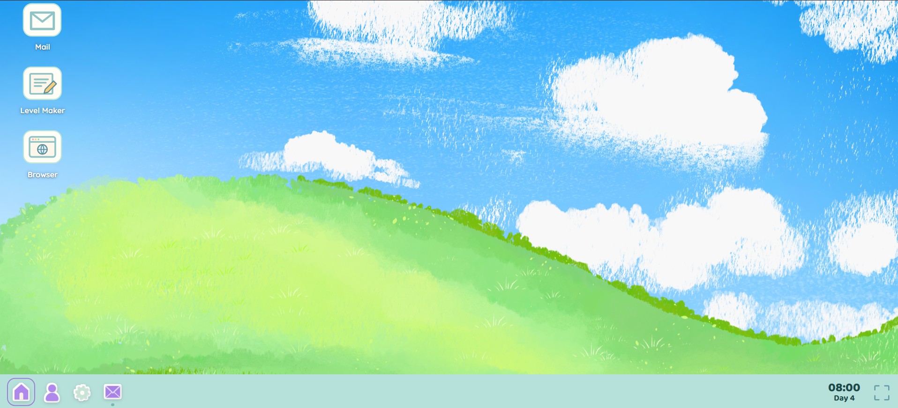
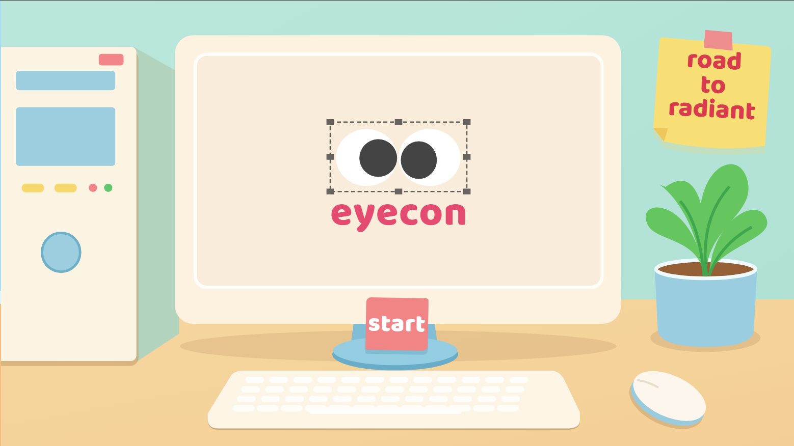

About us
Meet the team
Four friends who kept squinting at screens that should have been easy to read, so we built a game that teaches how to fix them.

Nica

Nadine

Kryu

Awi
Objectives
Why we made it

Most people never notice user interface design. They rarely think about where a button sits or what color a line of text is. Yet these small choices decide whether a website can actually meet a person's needs. While EyeCon does not cover every WCAG 2.2 guideline, it introduces the core principles of alignment, contrast, and typography as a foundation for inclusive interfaces. And that's where good design starts.
Trailer

About
So what is EyeCon?
EyeCon is an interactive 2D web-based simulation game for enhancing visual interface standards and accessibility literacy. You play as a junior UI designer who fixes broken interfaces for clients, from a personal portfolio to a mock-up of a Philippine government website.


Your design shift
starts here.
Fix layouts. Make clients happy.
Build your design skills, one task at a time.

